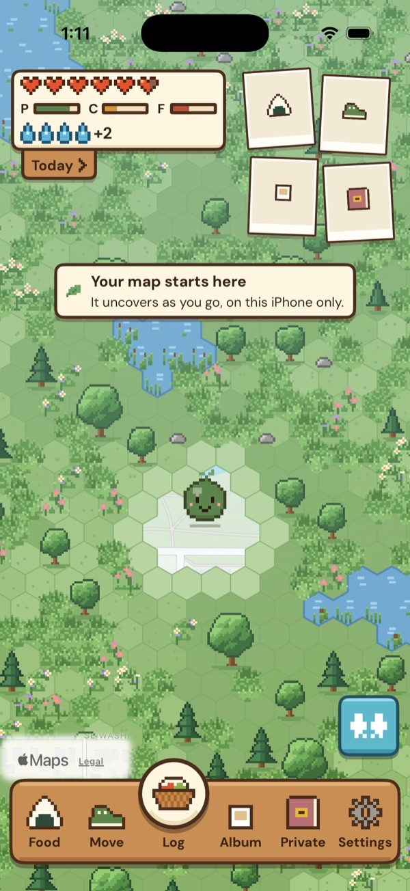
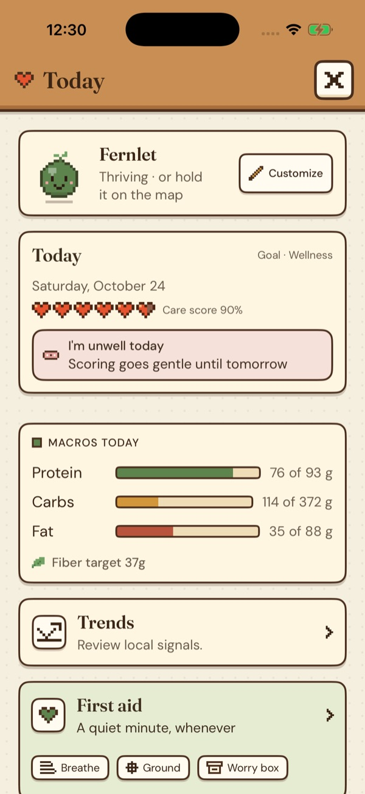
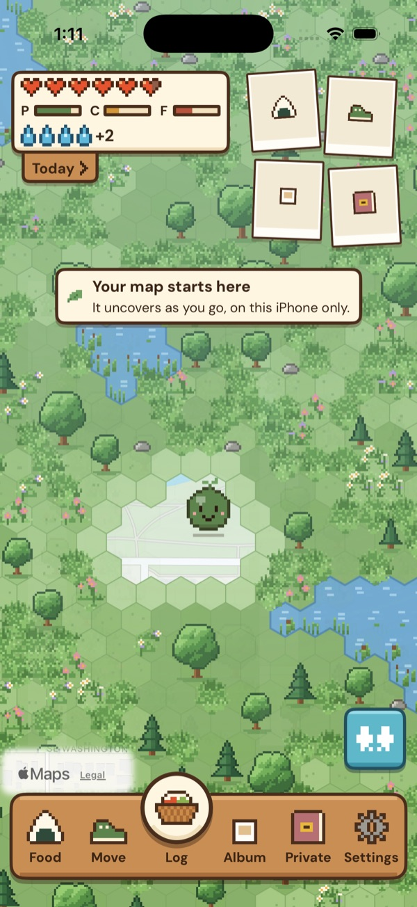
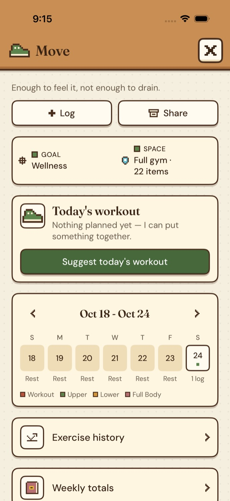
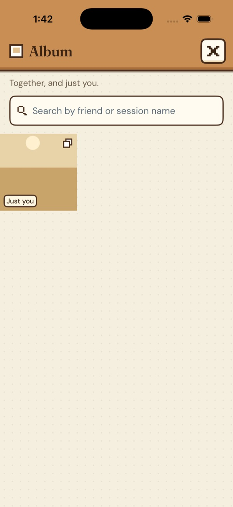

A tamagotchi
of yourself.
Fernlet is a small companion for everyday care. Its pixel companion, Sprout, lives on a map of your world that uncovers as you go, and it reflects the food, sleep, movement, rest, and other things you choose to log — without turning your life into a grade.
No streaks. No ads. No tracking. No account. Your health information stays yours.

Slept a little better last night.
What Fernlet leaves out
Fernlet is made to support your care, not keep you performing for an app. Each of these was possible, and left out on purpose.
- Streaks
- Target weights
- Leaderboards
- Ads and tracking
- Accounts and logins
Everything it does, a page each.

Your biggest supporter
Six hearts, a care score and a companion that meets you where you are. Plus stamps, a pixel wardrobe and widgets.

A world that uncovers as you go
Home is a live pixel map. Wild land clears where you walk, your companion collects stamps from the places you travel, and your map never leaves your iPhone.

A planner that starts from your day
Sessions from your split and your gym's equipment, weights learned from what you actually lift, and an animated how-to for every exercise.

Friends begin in person
No profiles, no feeds, no stranger requests. Hold two phones together to start a hangout, and everything passes directly between them.
Kept in a sealed store
Cycle data never reaches the AI, friends or ordinary sync. Wiring it in by accident breaks the build.
Privacy that doesn't depend on a promise
No servers of ours, no ads, no trackers, no account. Here's where everything lives, and why.
Try Fernlet before it ships.
A small group is testing Fernlet on TestFlight before it goes to the App Store. If you'd like to use it day to day and say what feels right and what doesn't, there's room.
Look at the code yourself.
Fernlet's source code, privacy policy, and technical documentation are public, including the network-egress inventory. Point a proxy at the app and check that the list is the whole list.